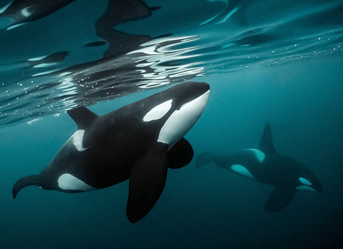

NATIONAL GEOGRAPHIC
How a commuter bridge turned into a bucket-list experience
TRAVEL
I’m standing on a steel walkway 440 feet above Sydney Harbor when a voice crackles over my headset. My guide tells me to look right and take in one of the world’s most stunning skylines.
The view: the familiar clamshell roof of the Sydney Opera House, ferries crisscrossing the sparkling water. Below me, cars and trains rumble across the Sydney Harbour Bridge, the world’s tallest steel-arch span. But up here, as twilight descends, with my head nearly in the clouds, it feels like I’m floating over a toy city.
I now see why climbing the Sydney Harbour Bridge ranks as one of Australia’s most popular experiences, attracting more than four million climbers (including, recently, Michelle and Barack Obama) since the first customer stepped onto its steel beams 25 years ago this week on October 1, 1998. The climb has helped make the bridge an instantly recognizable landmark, and the experience a lure for anyone visiting the continent. It also helped change tourism around the world.
Climbers pay up to $270 for the privilege of standing above a commuter roadway in nearly any weather and absorbing the incredible view from the Coat Hanger, the nickname locals gave the bridge even before it opened in 1932.
But few climbers stop to think about the novelty of it all: how Australia turned a piece of infrastructure a commuter bridge into an unlikely global tourist attraction that has inspired similar bridge experiences around the world, from New Zealand and Japan to Portugal and West Virginia.
Taking a chance on bridge climbing
As thrilling as it is, the Sydney climb is surprisingly easy, attracting customers aged 8 to 100. It has been the site of countless marriage proposals and more than 30 weddings. Every five minutes during peak periods, a guide leads small groups onto the bridge superstructure. Climbers ascend ladders and follow catwalks built for maintenance workers. They must wear harnesses and remain clipped to safety cables during the entire journey.
Perhaps even more daring than the climb was the journey to create it. In 1989 Paul Cave, the president of a tile manufacturing company, had a rare chance to climb the bridge during an international business conference hosted in Sydney. He saw the excitement in his colleagues’ eyes and instantly realized the tourism potential.
“Their reaction … was just quite amazing,” he told the University of New South Wales in a 2012 video on business leadership. “I thought I‘ve just got to share this with the world.”
Until that point climbing the bridge had been largely a renegade middle-of-the night activity, says Barry Newling, an official with the state government agency that owns and manages the span. He admits to hopping a gate and sneaking out over the harbor himself when he was a university student in the 1970s. “The bridge had no security on it,” he says.
But it would take nearly a decade to turn the climb into a business. When Cave requested government permission, he received a disappointing response: a letter with 64 reasons why he couldn’t safely do it.
Undeterred, he methodically began to address every objection. For example, the government was concerned that climbers would distract drivers. Cave’s answer: Outfit each visitor in a blue-grey jumpsuit that blends into the bridge.
Another worry was that customers could drop something on the roadway. “We don’t want things falling,” says Newling, who negotiated the latest bridge climb contract. “You can’t have any loose clothing, cameras, sunglasses. Imagine a camera falling from high and smashing a windscreen. You’d have a catastrophe.”
Then there was the fear of drunk climbers. The answer: mandatory breathalyzer tests. Other accommodations include outfitting climbers with helmets, headlamps, gloves, rain gear, and even handkerchiefs that clip to their suit, reducing the chance they’d drop onto the roadway.
Finally, after more than nine years of planning, Cave and his investors won permission to turn the Harbour bridge into a travel adventure, and it welcomed its first guest in October 1998.
Comments :
- john Very good
- john Very good
Leave a Reply
Your email address will not be published. Required fields are marked*
Related posts:
-
Orcas are killing porpoises but not eating them. Why
“What on Earth is happening?” wondered Giles, the science and research director for the nonprofit Wild Orca, based in Friday Harbor. “It didn't make any sense.”
View article -
 A mysterious new respiratory illness is spreading in dogs. Here’s what we know.
A mysterious new respiratory illness is spreading in dogs. Here’s what we know.When the reports first started coming in about a respiratory illness outbreak in New Hampshire dogs, in summer 2022, David Needle and his colleagues immediately began investigating.
View article -
 Dogs’ risk of dementia increases by half every year
Dogs’ risk of dementia increases by half every yearIs your old but beloved family dog suddenly having accidents in the house or getting lost in corners? Has it seemed like your pet sometimes doesn’t recognize someone they’ve known all their life?
View article